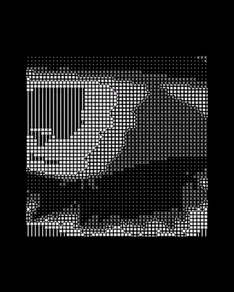

/'\_/`\
/\ \ __ ____ __ __ ____ _____ __ ___ __
\ \ \__\ \ /'__`\ /\_ ,`\ /\ \/\ \ _______ /',__\/\ '__`\ /'__`\ /'___\ /'__`\
\ \ \_/\ \/\ \L\.\_\/_/ /_\ \ \_\ \/\______\/\__, `\ \ \L\ \/\ \L\.\_/\ \__//\ __/
\ \_\\ \_\ \__/.\_\ /\____\\ \____/\/______/\/\____/\ \ ,__/\ \__/.\_\ \____\ \____\
\/_/ \/_/\/__/\/_/ \/____/ \/___/ \/___/ \ \ \/ \/__/\/_/\/____/\/____/
\ \_\
\/_/
_
